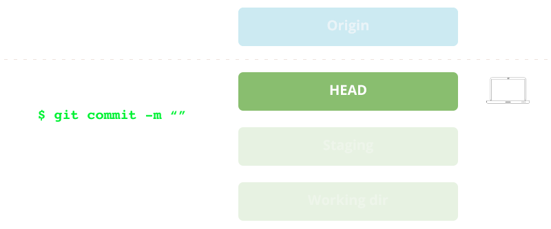

| Abrimos la consola mediante: | Cmd + Shift + p |
| Escribimos: | Install package + Enter |
| En la ventana que nos aparece escribimos: | Theme - [nombre] |
| Seleccionamos un tema: | Prefs - Color Scheme - Theme [nombre] |
Así quedaría la interfaz de Sublime con este tema:

Nos permite trabajar en un entorno seguro que minimiza el riesgo de pérdida de datos.
Además, nos indica en todo momento el estado actual del proyecto indicando qué archivos han sido modificados y por quien.
Se denomina "distribuido" porque cada miembro del equipo que trabaja en el proyecto dispone de una copia completa del repositorio de código remoto en su carpeta local.

Imagina que estás trabajando en el archivo index.html de tu proyecto web y le pides a un compañero que te ayude a implementar un slider en la cabecera. Con Git podrás:
Git está disponible para Windows, Mac, Linux y Solaris.

En un directorio vacío ejecutamos el siguiente comando:
$ git init
Si añadimos archivos a esta carpeta, los modificamos o borramos Git llevará un control exahustivo sobre todos los cambios que vayamos haciendo.
Para ver los cambios:
$ git status
(commit)El primer nivel es nuestra carpeta de trabajo. Podemos añadir, quitar, editar archivos y Git sólo se encargará de controlar los archivos que han sido modificados:

Una vez creados, modificados, añadidos o borrados los archivos al working dir los pasamos al staging mediante:
$ git add [nombre de archivo/os]
o bien:
$ git add -all [todos los archivos]
En el segundo nivel nuestros archivos están bajo el control de Git. Podemos seguir trabajando y repetir el proceso tantas veces como necesitemos.

Cuando hemos completado un conjunto de cambios, los "empaquetamos" mediante la instrucción commit y los colocamos en el HEAD mediante:
$ git commit -m ['mensaje descriptivo de los cambios']
Nuestro conjunto de cambios está listo para enviar al repositorio remoto. El HEAD es nuestra "bandeja de salida". Podemos seguir trabajando y crear más "commits".
Hasta ahora hemos usado Git para controlar conjuntos de cambios en local.
Vamos a crear un repositorio remoto y lo vincularemos a nuestro local para poder trabajar en equipo:
Una vez creado el repositorio remoto en Github lo "vinculamos" a nuestro repositorio local mediante:
$ git remote add origin https://github.com/user/repo.git
Una vez indicado a Git que tenemos un repositorio remoto podemos enviar el conjunto de cambios contenidos en nuestro HEAD mediante:
$ git push -u origin master
Por defecto Git denomina origin a nuestro repositorio remoto y crea una rama llamada master. Enviamos el contenido de HEAD mediante:

Un software de control de versiones adquiere mayor relevancia cuando colaboran diferentes miembros de un equipo sobre el mismo código.
Una vez creado el repositorio remoto, el resto de miembros del equipo pueden bajarse una copia a sus equipos mediante:
$ git clone https://github.com/user/repo.git
Una vez clonado el repositorio ya podemos empezar a añadir código
a nuestro working dir, stage y HEAD
Antes de enviar nuestros cambios tenemos que bajarnos la última versión de origin
$ git pull origin master
Cuando obtenemos archivos del repositorio remoto a nuestra copia local Git obtiene todos los archivos nuevos que se hayan añadido y elimina los que se hayan quitado.

Cuando dos miembros del equipo han modificado el mismo archivo Git procura combinarlos automáticamente.
Puede darse el caso de que surja un conflicto si Git no reconoce qué parte del código ha de quedarse y cual eliminar. En este caso hemos de editarlo manualmente.
Podemos consultar en cualquier momento cual es el estado de nuestros archivos mediante:
$ git status
Además, podemos consultar el historial de "commits" realizados por los diferentes miembros del equipo mediante:
$ git log
Añade un dropdown en la landing page DecoMAG